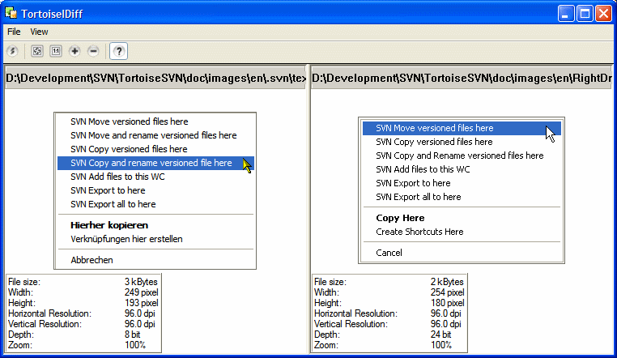
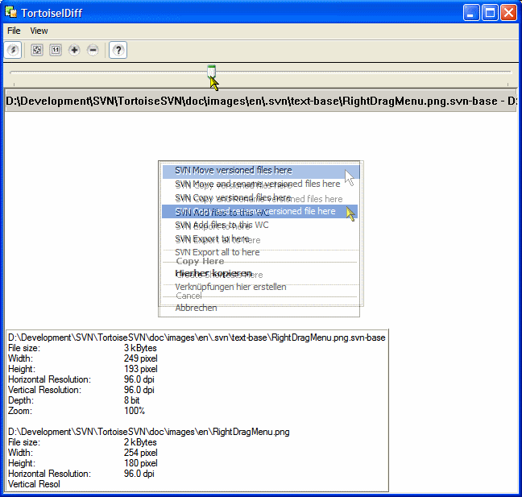

Depending on your project, not all files which are under version control are text files. Most likely you will have images too, for example screenshots and diagrams for the documentation/helpfile.
For those files it's not possible to use a common file diff tool, because they only work with text files and diff line-by-line. Here is where the Tortoise Image Diff tool (TortoiseIDiff) comes to the rescue. It can show two images side-by-side, or even show the images over each other alpha blended.
 